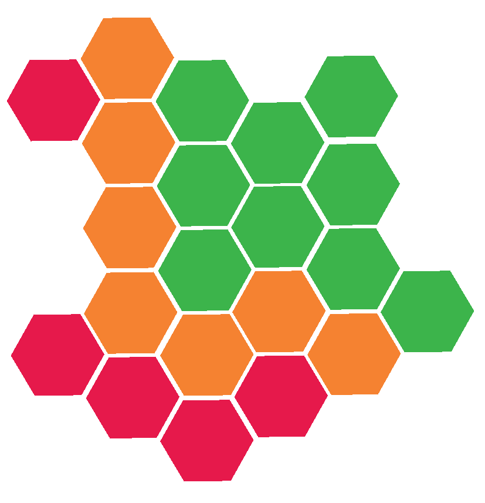

Chapter 7 NanoPlot

NanoPlot can be thought of as the fastqc for ONT data. It produces a lot of useful visualisations to investigate the quality of ONT sequencing data. It can be used for fastq, fasta, BAM, and sequencing summary files. The link for its github page is: https://github.com/wdecoster/NanoPlot
ONT data has much lower quality scores than Illumina with Q10 being good. If you have enough coverage and length the low quality can be corrected by downstream processes not covered in this tutorial.
7.1 NanoPlot: run

Prior to running NanoPlot we will make a directory for the NanoPlot output. As NanoPlot creates a lot of files, we'll make a subdirectory for the NanoPlot output for the porechopped data.
Now to run NanoPlot. The options we will use are:
-t: Number of threads to be used.--fastq: Specifies the input path which is a fastq file.-o: Directory where the output will be created.-p: Prefix of output files. It is useful to have "_" at the end of the prefix.
7.2 NanoPlot: output

List the files in the output directory.
There are quite a few files. These should all start with "Acinetobacter_" thanks to the -p option. To quickly check all the results we can open the report html file with firefox.
The first section contains NanoStat output. Quickly look over this and see how it compares to the NanoStat output of the pre-porechopped reads.
| General summary | values |
|---|---|
| Mean read length | 7,070.8 |
| Mean read quality | 9.5 |
| Median read length | 6,700.5 |
| Median read quality | 10.4 |
| Number of reads | 2,000.0 |
| Read length N50 | 8,143.0 |
| STDEV read length | 3,336.0 |
| Total bases | 14,141,646.0 |
| Number, percentage and megabases of reads above quality cutoffs | |
| >Q5 | 2000 (100.0%) 14.1Mb |
| >Q7 | 1998 (99.9%) 14.1Mb |
| >Q10 | 1231 (61.6%) 8.8Mb |
| >Q12 | 29 (1.5%) 0.2Mb |
| >Q15 | 0 (0.0%) 0.0Mb |
| Top 5 highest mean basecall quality scores and their read lengths | |
| 1 | 12.3 (7039) |
| 2 | 12.3 (5770) |
| 3 | 12.3 (8052) |
| 4 | 12.2 (8120) |
| 5 | 12.2 (3041) |
| Top 5 longest reads and their mean basecall quality score | |
| 1 | 34661 (9.2) |
| 2 | 31549 (8.5) |
| 3 | 25072 (10.0) |
| 4 | 24871 (10.3) |
| 5 | 23185 (10.7) |
After the Summary Statistics section there is a Plots section. These are all plots created by plotly meaning they are interactive. With these plots you can:
- Make boxes to zoom into a specific area.
- Click and drag left or right only to zoom into a specific part of the x axis.
- Click and drag up or down only to zoom into a specific part of the y axis.
- Click the home icon () on the top right to reset the axes.
- Hover over a points/bars to see the specific values of it.
The plots are:
- Weighted Histogram of read lengths
- Histogram of "Number of bases" (y) against "Read length" (x).
- Weighted Histogram of read lengths after log transformation
- Histogram of "Number of bases" (y) against log transformed "Read length" (x).
- Non weighted histogram of read lengths
- Histogram of "Number of reads" (y) against "Read length" (x).
- Non weighted histogram of read lengths after log transformations
- Histogram of "Number of reads" (y) against log transformed "Read length" (x).
- Yield by length
- Plot showing the "Cumulative yield for minimal length" (y) by "Read length" (x).
- The cumulative yield is measured in Gigabases (billion bases).
- This plot is useful to know how many bases you would retain if you filtered reads based on read length.
- Read lengths vs Average read quality plot using dots
- Each dot represents a single read.
- At the top of the plot is a histogram of Number of reads against read lengths.
- At the right of the plot is a sideways histogram of number of reads against average read quality.
- Read lengths vs Average read quality kde plot
- Each dot represents a single read with a topology map showing the density of plots. THe darker the area the more dense.
- This is the most informative plot.
- At the top of the plot is a histogram of Number of reads against read lengths.
- At the right of the plot is a sideways histogram of number of reads against average read quality.
7.3 NanoPlot: MCQs
 Please attempt the below MCQs with the information in the report html.
Please attempt the below MCQs with the information in the report html.
- What is the mean read quality for all the data?
- What is the mean read length of the data?
- How many Megabases are within reads with a quality cutoff of >Q10?
- Approximately how many bases would you retain if you filtered out/removed reads with a length <10,000bp (Yield by length)?
- Look at the "Read lengths vs Average read quality plot". In what average quality range are the majority of reads?
7.4 NanoPlot: summary
We have use NanoPlot to produce read quality and length stats in table and plot form. Our data still looks good after porechopping but we still need to carry out some filtering.
You can use NanoPlot with different input files. This will give you different plots. For more details please see the "Plots Generated" section on: https://github.com/wdecoster/NanoPlot.